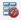

7.3. Creating customized dialogs, windows and dock widgets#
With itom it is not only possible to add menus and toolbar elements to the main GUI of itom or to use the default set of input and message boxes, but it is also possible to create own user interfaces. These interfaces are designed by help of a WYSIWYG (“what you see is what you get”) design tool (Qt Designer). The logic behind the surfaces is then scripted using Python. Therefore it is possible to change the appearance of control elements at runtime or to connect a signal, emitted when for instance clicking on a button, with a user-defined python method.
In this chapter, the creation of such user interfaces is explained.
7.3.1. General approach#
In order to create customized user interfaces in itom, several steps have to be done. They are addressed in the course of this chapter and are as follows:
The content and layout of the user interface has to be designed. This is mainly done by the help of the software Qt Designer and shown in the following section.
It is usually desired to provide an user interface that can be displayed on various screen sizes and resolutions. Therefore it is always recommended to use the principle of layouts and size policies of the control elements, denoted as widgets (in Qt language) or general uiItems in itom. Both are also set in the Qt Designer, however it is also possible to add or remove widgets from layouts at runtime (see this section).
The Qt Designer can further be used to define simple interactions between widgets (e.g. if a check box is clicked, a group box should be disabled), denoted as signal-slot connections (see https://doc.qt.io/qt-5/designer-connection-mode.html or this section). Additionally, the tab order of all widgets can also be defined (see https://doc.qt.io/qt-5/designer-tab-order.html) or default properties of all widgets can be set.
A customized user interface can not only consist of default widgets, like buttons, comboboxes or checkboxes, but also of itom specific control elements, like various types of plots or other itom-specific widgets (see also this section).
All further interaction of the user interface and its control elements is then done in Python scripts within itom. This interaction is mainly divided into three parts:
Change properties (like the caption of a button, the text of a label, the current item of a combobox…) via a piece of python code (see this section).
Call slots (special methods of the control elements, that can be interactively triggered at runtime) via the command
call(). Slots are listed in the official Qt help of every widget class. There are further methods of the control elements, that are no real slots, however they are specially wrapped by itom, such that they behave like slots and can be triggered by the same way. See the list of wrapped slots.Every control element (widget) of the user interface provide specific signals, that are triggered if and event occurred. This signal consists of a name and optional argument. For instance, a checkbox emits the clicked signal with a boolean argument checked, that is true if the checkbox is checked now, else false. It is possible to connect one or multiple Python methods to such a signal, which are called whenever their connected signal is emitted (see section).
All these interactions between the control elements, provided by the Qt framework (written in C++) and Python code in itom can be done, if all data types of the involved parameters, properties and return types are among the list of supported data types.
7.3.2. Qt Designer#
The Qt Designer is used to create a custom user interface, that can be displayed within itom and interact with itom and Python code. This software is part of the Qt framework, the platform independent GUI framework that is also used to run itom itself. For general information about the usage of the Qt Designer, one is referred to the official documentation under http://doc.qt.io/qt-5/qtdesigner-manual.html
In order to start the Qt Designer, click on the corresponding icon in the toolbar of itom:
{kind=link}
or double-click on a corresponding ui-file in the file system widget of itom. In the first case, Qt Designer shows an initialization dialog, where you can select the base type of the user interface you want to create.
{kind=link}
Basically you have the choice between three different base layouts:
Dialog. A Dialog is usually displayed on top of the main window and only has got one close-button in its title bar. Often, dialogs are used for configuration dialogs where the user finally closes the dialog using one of the standard buttons (OK, Cancel, Apply…) in order to confirm or reject the current changes in the dialog. A dialog cannot have its own toolbar, menu or status bar. To open and use such a dialog within itom, see this section.
Main Window. A main window is a fully equipped main window, which can be minimized, maximized, can have toolbars, menus and a status bar. Therefore it is recommended to use this type of user interface for the main window of your measurement system. Like a dialog, it is possible to show the main window on top of itom (as sub-window of itom) or as independent window, which has its own icon in the windows tray. To open and use such a window within itom, see this section.
Widget. A widget is the base class for all control elements provided by Qt. Therefore a widget does not have any title bar or windows frame. Nevertheless there are three use cases where it makes sense to choose this type of base layout:
itom is able to put a widget base layout into a default dialog layout, that can optionally show some default buttons on the right side or at the bottom of the dialog. This is the easiest way the generate a configuration dialog in itom, since you do not need to script the necessary methods handling clicks on one of these buttons. In this case, itom automatically gets full information about the close status and type of closing of the dialog (accepted, rejected…). For more information how to use this within itom, see this section.
Since itom 4.0 it is possible to place a customized widget as central widget in the center of the main window of itom or as toolbox (denoted as dock widget), in one of the four toolbox areas of the main window of itom. The toolbox can be docked or undocked and moved from one allowed area to another one. For using a widget as central widget, see this section, for a usage as toolbox see here.
Since itom 4.1 it is further possible to add such a customized widget base layout to one layout of another customized user interface. For more information about this, see this section.
After having chosen one of these base layouts (types), your surface is displayed in the middle of the Qt Designer and you can start to drag elements from the widget library panel onto your surface. If the Qt Designer is started from itom you will even find the sections itom plugins and itom [widgets] in the widget library panel of the Qt Designer. They contain all loadable designer plugins, directly provided by the itom software. The general availability of plugins depend on the designer plugins that are currently available in your installation of itom.

A common set of itom specific widgets are displayed here:
{kind=link}
The difference between itom plugins and itom [widgets] is, that the first are designer plugins (single libraries each) for itom and the latter come from one itomWidget library, that is part of the core project of itom.
After having placed one widget on the canvas, you will see its properties in the property toolbox of Qt Designer. Every widget has the common property objectName. If you assign a unique object name to any of your control elements, it is possible to access and manipulate this widget from a Python script in itom using this name, too. In general many of the properties that are visible in the property toolbox can afterwards be read or changed by an appropriate script (depending on the data type of the property).
The alignment of control elements on the surface is mainly controlled by so-called layout elements. These layouts together with size policies that can be assigned to every widget control the appearance of the entire user interface and provide the feature that the dialog can be changed in size whereas all widgets are dynamically repositioned. For more information about layouting your user interface, see http://qt-project.org/doc/qt-5/designer-layouts.html.
Note
In order to provide an user interface, that can be properly displayed on screens with different sizes and rescaled by the user, try to always set layouts. Make sure, that there is no unassigned layout symbol () somewhere in the object inspector panel. If so, make a right click on such an item and select an appropriate layout. Additionally, avoid to set any minimum or maximum size of any widget. Instead try to solve this by layouts and the principle of size policies (see https://doc.qt.io/qt-5/qsizepolicy.html).
Finally, save your user interface under a convenient filename with the suffix .ui.
7.3.2.1. Widget library panel#
In principle, you are allowed to place every widget on your user interface that is available in the widget library (widget box) of Qt Designer. Later, you will learn how you can access properties of any widget (read and/or write) and how you can call specific functions provided by any widget. However, you will also learn that you do not have access using Python to all functions a widget has and you are not able to sub-class any widget, like you can it using a native C++ program. Therefore, it is not recommended to place any widget from the group Item Views (Model-based) on your user interface since only few functions of these widgets are accessible by a Python script. If you need a list box, use the item-based list widget. itom also provides some widgets (section itom widgets) that can be placed on your user interfaces, for instance some plot widgets or the widget for plotting the result of the python module matplotlib (see Python package matplotlib).
7.3.3. Loading user interface in itom#
In this section, an introduction is given how to create and load user interfaces in itom depending on different type-attributes.
7.3.3.1. Widget embedded in itom-dialog (TYPEDIALOG)#
Like described above, the easiest and most comfortable way to load user interfaces in itom is to use the type TYPEDIALOG. In Qt Creator you design a widget with your individual content and then when loading this GUI in itom, the widget is embedded in a dialog provided by itom, which optionally adds a horizontal or vertical button bar at the right side or at the bottom of the dialog.
Let us create an exemplary user interface. In Qt Creator the following widget has been created:

On the right side of the widget testWidget you see the hierarchical organization of objects that are put on the widget. At first, a group box has been placed on the widget. Inside of this group box two radio buttons have been placed using a simple drag&drop from the widget library. Both radio buttons are aligned inside of the group box with a vertical layout. This is reached by a right-click on the group box and choosing vertical layout from the layout menu. Below the group box, a widget of type lineedit and a push button (type pushbutton) have been placed. Finally the three main elements are also aligned in a vertical layout with respect to the overall widget. This can be achieved by a right click on an empty space of the widget or directly in the object inspector. If you increase now the size of the overall widget, you will see that all sub-elements are resized according to their layout. Since we don’t want sub-widgets to be vertically stretched and distributed, a vertical spacer element has been placed at the bottom of the vertical layout stack.
The following properties have been directly set in Qt Creator:
group box: objectName: groupOption, title: ‘Please make your choice’
push button: objectName: btnClickMe, text: ‘click me’
line edit: objectName: txtInput, text: ‘put here your text…’
radio buttons: objectName: radioOpt1 and radioOpt2, text: ‘Option 1’ and ‘Option 2’
The entire widget is saved under the filename testWidget.ui in an arbitrary directory.
Then you can load and show the widget in itom by creating a python-script in the same directory with the following content. You can also directly type these lines into the command line of itom, however, you should then assure that the current directory is equal to the directory where the user interface has been stored.
dialog = ui("testWidget.ui", ui.TYPEDIALOG) # loading dialog
result = dialog.show(1) # modally show, wait until the dialog has been closed
print("The dialog has been closed with code", result)
At first, an instance of class itom.ui is created that is given the name of the user interface file. This
instance can then be accessed by the name dialog. By calling the method show(), the dialog is shown.
Since the parameter has been set to 1, the dialog is shown in a modal style, such that python waits until the dialog
has been closed again and itom is entirely blocked during that time. However, then it is possible to get informed about
the way the dialog is closed, such that the variable result will be set to 0 if the user closed the dialog using a
cancel button (not available here) or the close button in the title bar or 1 if the user clicked an OK-button.
{kind=link}
It is also possible to open the dialog in a non-modal version or to open it in a modal style however to immediately force
python to continue the script execution. This depends on the parameters of show(). However only in the
modal case above, the closing result can be tracked by Python. Additionally, this is also only possible if a widget is
embedded in a dialog, given by itom, like it is always the case if you create an instance of itom.ui with
the second parameter set to ui.TYPEDIALOG.
Right now, you don’t have the possibility to quit the dialog using any button (OK, Cancel…). In order to obtain
a button bar with these buttons, the call to the class itom.ui needs to be changed. There is the choice
between two different appearances of a button bar, which can be automatically added to your widget:

Next, you need to select which buttons should be included in the button bar. This is done by creating a python dictionary, where each elements corresponds to one button. The key-word of the item corresponds to the role of the button (see enumeration QDialogButtonBox::ButtonRole of the Qt-library documentation) and the value is the text of the button. Common roles are:
“AcceptRole”: Use this role for an OK-button. The dialog is closed and the return value in modal style is 1.
“RejectRole”: Use this role for a Cancel-button. The dialog is also closed but the return value is 0.
Finally, the call to itom.ui must be in the following way, in order to get an auto-generated button bar:
dialog = ui("testWidget.ui", ui.TYPEDIALOG, ui.BUTTONBAR_VERTICAL, \
{"AcceptRole":"OK", "RejectRole":"Cancel"})
# or
dialog = ui("testWidget.ui", ui.TYPEDIALOG, ui.BUTTONBAR_HORIZONTAL, \
{"AcceptRole":"Yes", "RejectRole":"No"})
Note
You can also use a keyword-based call to ui since every parameter has its default value such that you can omit
parameters beside the first one. For more details about all parameters, keywords and its default values see
itom.ui.
The dialog is closed and deleted if the variable dialog is deleted using the command del.
7.3.3.2. Main window or dialog (TYPEWINDOW)#
If you are not interested in the exact return value of the dialog but you want to have full control and all available functionalities of any dialog or main window, create an user interface based on a dialog or main window in Qt Designer.
{kind=link}
The figure shows an exemplary user interface (testWindow.ui) that is based on a main window. On the right side, there have been added three buttons, nested in a vertical layout. On the left side, there is a list widget (objectName: listWidget, type: List Widget). Additionally a menu has been added that consists of three items.
This main window can now be shown using the following code snippet:
win = ui("testWindow.ui", ui.TYPEWINDOW)
win.show() # this is equal to win.show(0) -> non-modal
Then, the window is shown on top of the main window of itom, since it is considered to be a child of itom. If you
don’t want this, you can also add the keyword-parameter childOfMainWindow=False to the call of itom.ui:
win = ui("testWindow.ui", ui.TYPEWINDOW, childOfMainWindow=False)
Here, you need to use the keyword, since the parameters dialogButtonBar and dialogButtons (used for TYPEDIALOG) are not given in this case, since they are useless in case of TYPEWINDOW. If your window is no child of itom, it gets its own icon in the Windows tray bar and does not stay on top of itom.
7.3.3.3. Main window or widget as dockable toolbox (TYPEDOCKWIDGET)#
It is also possible to integrate user-defined main windows or widgets as dockable toolbox in the main window of itom.
This is done using the type value ui.TYPEDOCKWIDGET. Then the widget is registered as dockwidget in the main window of
itom and once it becomes visible, its startup position is at the top-center position. You can define the initial dock
area using the optional argument dockWidgetArea of the class itom.ui.
win = ui("testWindow.ui", ui.TYPEDOCKWIDGET, dockWidgetArea = ui.RIGHTDOCKWIDGETAREA)
Possible values for dockWidgetArea are:
ui.LEFTDOCKWIDGETAREA = 1
ui.RIGHTDOCKWIDGETAREA = 2
ui.TOPDOCKWIDGETAREA = 4
ui.BOTTOMDOCKWIDGETAREA = 8
7.3.3.4. Main window or widget as part of the central widget area of itom (TYPECENTRALWIDGET)#
It is also possible to integrate user-defined main windows or widgets as part of the central widget area of the main window of itom. This is done using the type value ui.TYPECENTRALWIDGET. The central widget area can contain several widgets which are vertically stacked and whose size can be vertically changed by a splitter layout. Per default, this central area only contains the command line. Every new widget that is added to this area is inserted at the top.
The current size of all widgets in the central area (including the command) line, can be changed via
itom.setCentralWidgetsSizes. This method expects a list of integers as argument which correspond to the desired height
of every widget in pixels (0: the widget is collapsed and can be made visible again with the mouse). If the sum of all
sizes does not correspond to the current height of the central area, the sizes are distributed based on their relative
weights.
import itom
win = itom.ui("testWindow.ui", ui.TYPECENTRALWIDGET)
itom.setCentralWidgetsSizes([400,300]) # desired height of 400px for the new widget 'win' and 300px for the command line of itom.
7.3.4. Accessing control elements#
Until now, you know how to design an interface and how to show it using itom. This and the following sections explain how you dynamically interact with the user interface and its elements. One elementary tool for this is to access any desired element of the GUI. For instance, if you want to change properties of a button or the text of a lineedit-widget, you first need to access these elements.
The accessing is simply done by the unique and specific objectName of each element and the dot-operator (.). Let’s take the first example testWidget.ui again. The dialog has been assigned the variable dialog. Then have the following possibilities to access its elements:
elemGroup = dialog.groupOption # access the group box by its objectName
elemRadioOpt1 = dialog.radioOpt1 # OR
elemRadioOpt1 = elemGroup.radioOpt1
textfield = dialog.txtInput
Each variable created by the code block above is an instance of itom.uiItem. It is this class that defines the
dot-operator. Looking at the example of accessing the first radio button, which is a child of the group-box, it is both
possible to access the group button by its objectName as child of the entire dialog or as child of the groupbox. This is
feasible since the class ui is derived from uiItem, such that the dot-operator not
only works for entire dialog references but also for accessing sub-elements of other widgets. However, since each
objectName is unique among all elements of the entire dialog, is doesn’t matter how to access any element.
An alternative access to child widgets is provided by the method getChild() which has the desired
objectName as argument:
elemGroup = dialog.getChild("groupOption")
This method can for instance be used if the widgetName is created from a formatted string.
But why do we need to access these elements? Why do they returns its own instance of class uiItem. These
questions are answered in the following sections…
7.3.5. Getting and setting properties#
As already mentioned, you can read or write most properties of any element that are also listed in the property toolbox of
Qt Designer. Properties are also separately listed in the corresponding Qt documentation. In general it makes sense
to set properties - when offline possible - in the Qt Designer. This is a little bit more efficient and keeps your
script tiny. Getting and setting properties is possible if you have an object of type uiItem. Therefore
you need to get this object like described in the section above.
Getting the property value can either be done by using the mapping-operator […] or by using the method
getProperty(). For instance, if you want to get the current text and the enabled status of the
textfield in dialog testWidget.ui from the first example, you can use one of the following possibilities:
# 1. possibility
text = dialog.txtInput["text"]
enabled = dialog.txtInput["enabled"]
# 2. possibility
[text,enabled] = dialog.txtInput.getProperty(["text", "enabled"])
Note
For accessing single properties, it is shorter and easier to use the mapping-operator […]. However, due to the
internal thread-structure of itom, it is a little bit faster to access multiple properties of the same widget
using the method getProperty().
In order to set one or multiple properties, you can use similar methods. Simply assign a value to the mapping-operator
[…] or use the method setProperty().
# 1. possibility
dialog.txtInput["text"] = "new text for this textfield"
dialog.txtInput["enabled"] = False
# 2. possibility
dialog.txtInput.setProperty( {"text":"new text for this textfield", \
"enabled":False} )
If you use setProperty(), you always need to pass a dictionary as argument. This dictionary can
contain one or multiple properties, where the keyword always is the property-name (string) and the value is the
corresponding new value (type depends on corresponding C++ type). For more information about supported data types, that can
be accessed by python in itom see Supported data types.
If the property is an enumeration or a bitmask (or-combination of enumeration values), you can either pass the integer value or a string with the enumeration key name. In case of a flag, pass a semicolon-separated string with all values. The return value is always the integer number.
7.3.6. Supported data types#
The classes itom.ui and itom.uiItem are the connection between any python-script in itom and
GUI-elements, written in C++ and provided by Qt. Therefore, it is necessary to transform types from python to
corresponding C++-structures and vice-versa. The following table lists some convenient type casts. In general, it is
always tried to convert the input type to the desired destination type, such that a number can also be transformed to a
string, if it is always known, that the destination requires a string.
C++/Qt-Type |
Python-Type |
|---|---|
QString |
str or any type, that has a string representation |
QByteArray |
unicode or byte type |
QUrl |
any string that can be interpreted as Url |
bool |
any type that can be casted to a boolean value (1, 0, True, False…), including corresponding numpy scalars. |
QStringList |
any sequence that only contains values castable to QString |
int, short, long |
integer, floats are rounded to integer, True=1, False=0, including corresponding numpy scalars. |
unsigned int … |
integer, floats are rounded to integer, True=1, False=0, including corresponding numpy scalars. |
float, double |
integer, floats, True=1.0, False=0.0, including corresponding numpy scalars. |
QVector<int> |
any sequence whose values are castable to int |
QVector<double> |
any sequence whose values are castable to float |
QList<int> |
any sequence whose values are castable to int |
QList<double> |
any sequence whose values are castable to float |
QVector2D |
any sequence with two values castable to float (x,y) |
QVector3D |
any sequence with three values castable to float (x,y,z) |
QVector4D |
any sequence with four values castable to float (x,y,z,w) |
PCLPointCloud |
|
PCLPoint |
|
PCLPolygonMesh |
|
DataObject* |
|
AddInDataIO* |
|
AddInActuator* |
|
QVariant |
any of the types above can be transformed to QVariant |
QVariantMap |
a dictionary where keys are strings and values are generally convertible. |
QVariantList |
any sequence whose items can be convertible. |
QRegion |
|
QColor |
string with color name or hex-value or |
Enumeration |
integer with value or string with key (setter only) |
QTime |
|
QDate |
|
QDateTime |
|
QFont |
|
Qt::CheckState |
int (0: unchecked, 1: partially checked, 2: checked) |
Qt::ItemFlags |
int, bitmask (see Qt::ItemFlags for definitions) |
If a property or other arguments in Qt require other data types, it is possibly to implement a converter for them. It only becomes a little bit more difficult for pointers to extended C++ or Qt classes. The conversion is mainly done in the itom class PythonQtConversion.
7.3.7. Connecting signals#
Now, you know how to change properties of dialogs at runtime of itom using a small python script snippet. In this section, you will learn how you can let itom a specific python-method for instance if a button on the user interface is clicked. Whenever something is changed in a user interface or the user starts to interact with the interface, any type of event is emitted. In Qt many of these events are specially handled and called signals. For instance, if an user clicks a button, toggles a checkbox, triggers an item in a menu or selects an item in a list widget, a signal is emitted or sent.
The counterpart to a signal is called slot. Qt provides the possibility to connect a signal with a slot, under the only condition, that both have exactly the same order and type of arguments. It is even possible to connect the same signal to various slots. Whenever a signal is emitted, all connected slots are executed. itom provides you the possibility to define slots in form of ordinary python methods or functions and to also connect them to signals of widgets on your user interface.
For establishing the connection, you need again a reference to the specific widget on the user interface. This reference
is any variable of type uiItem. Next, you need the name and the arguments of the Qt signal, you want
to connect to. This information can be obtained by the Qt documentation. For instance, if you need any signal that a
widget of type QPushButton (the type of our push button, placed in the user interface in file testWidget.ui), go
to https://doc.qt.io/qt-5/qpushbutton.html. Unfortunately, you won’t find a headline called Signals at this page,
since QPushButton does not directly declare any signal. However, you can see under Additional Inherited Members,
that QPushButton inherits signals from its base classes. The most important signals are inherited from
QAbstractButton. Click on its link and you will see the available signals for a push button:
void clicked ( bool checked = false )
void pressed ()
void released ()
void toggled ( bool checked )
If any argument provides a default value, you can also omit the specific argument. Select the signal that is convenient for you and create its string-signature. The signature always contains the following structure:
signature = "signalName(typeName1,typeName2,...)"
For instance, the signatures for the signals above are:
"clicked()" or "clicked(bool)"
"pressed()"
"released()"
"toggled(bool)"
Then, create a python method in your script, which you want to consider to be a slot and that should be connected with the signal. This method always requires the same number of arguments than given in the signature. If you want to connect a signal to a method that is a bounded method of a class in python, the first argument self does not count to the number of total arguments, hence, you always need to define the first parameter self, like it is the case for bounded methods.
Finally, use the method connect() in order to establish the connection. For instance let us create
a method, that should show a message when the push button “click me” on the first exemplary dialog (testWidget.ui) has
been clicked:
dialog = ui("testWidget.ui", ui.TYPEDIALOG, ui.BUTTONBAR_VERTICAL, \
{"AcceptRole":"OK", "RejectRole":"Cancel"})
def showMsg():
#slot executed in button 'click me' is clicked
ui.msgInformation("itom","you pressed the button click me")
# connect(signature, method)
dialog.btnClickMe.connect( "clicked()", showMsg )
# show dialog
dialog.show()
You have seen that the method connect() of the element dialog.btnClickMe (the push button) has
been called. Its first argument is the signature of the signal, as second argument the reference to the slot-methods is
given. If you integrate the dialog within a class and the slot is a member of this class, too, the exemplary code can
look as follows:
class MyDialog():
def __init__(self):
self.dialog = ui("testWidget.ui", ui.TYPEDIALOG, ui.BUTTONBAR_VERTICAL, \
{"AcceptRole":"OK", "RejectRole":"Cancel"})
self.dialog.btnClickMe.connect("clicked()", self.showMsg)
self.dialog.show()
def showMsg(self):
ui.msgInformation("itom","you pressed the button click me")
# instance of class MyDialog
test = MyDialog()
Let us use the second example testWindow.ui. If you want a python method to be executed if the user clicks an action in the menu of the main window, you should connect the signal triggered() of every item in the menu with your method. In Qt such an item is an instance of QAction and is also accessed by its objectName.
win = ui("testWindow.ui", ui.TYPEWINDOW)
def addItem():
print("action addItem clicked")
win.actionAddItem.connect("triggered()", addItem)
# actionAddItem is the objectName of the action
win.show()
Note
New in itom 3.2
The method connect() now has the additional optional argument minRepeatInterval. If this
is given with a value > 0, the connected slot will only be called, if the last call from the same signal
happened at least minRepeatInterval ms ago. Else, the new call is ignored. This can be used, to avoid that
signals, that are fired very often, will jam the incoming event queue of the corresponding Python method.
It is further possible to not only connect signals from widgets to Python slots, but also signals from dataIO or
actuator instances. For this, see the methods connect() and
itom.actuator.connect().
7.3.8. Calling slots#
Widgets on user interfaces not only emit signals but they also have slots defined, such that you can connect other signals (e.g. from other widgets) to these slots. Using a python script in itom you can also call (or: invoke) these slots.
Note
With respect to the documentation of Qt it is only possible to invoke slots of widgets from python, but it is not possible to call public, protected or private member methods. This is a limitation of itom. Other python packages like pySide or PyQt offer this possibility, however their use is not possible in itom, since they require the python interpreter to be executed in the main thread, which is not the case in itom, where Python runs in its own secondary thread.
In order to invoke a slot, call the method call() of any element on your user interface. For
instance, in order to clear the list widget (objectName: listWidget) of uiWindow.ui, you can invoke its public
slot clear():
win = ui("testWindow.ui", ui.TYPEWINDOW)
listWidget = win.listWidget
listWidget.call("clear")
Here, the method call() is only called with one argument, the name of the slot in Qt. If this
slot would have any arguments that can be converted from Python (see Supported data types), add these arguments
as further parameters to the call.
7.3.8.1. Special (wrapped) slots#
Unfortunately, there are some methods of important widgets in Qt, which are not defined to be a public slot. For
instance, the methods to add item(s) to a list widget are no slots. However, there are some exceptions defined in itom
such that some public methods of widgets can also be called with the method call(). These
exceptions are contained in the list below. Their call syntax is as follows:
myWidget: uiItem = gui.objectNameOfWidget
retVal: retType = myWidget.call("name of slot", arg1: arg1Type, arg2: arg2Type, ...)
# The return value of the wrapped slot is returned
# The first argument of the call method is the method
# name of the slot, all other arguments are the arguments
# to the method (no keyword based arguments allowed).
The class names in the following list corresponds to the Qt class name of the widget, where the slot can be applied to. It is not part of the call statement in Python.
- QObject.blockSignals(block: bool)#
defines if the widget / object should emit any signals or not.
New in itom 4.1
- QObject.signalsBlocked() bool#
Returns
True, if possible signals of this widget / object are emitted, or blocked (False).New in itom 4.1
- QWidget.setGeometry(int x, int y, width: int, height: int)#
changes the geometry of the widget.
- QWidget.setCursor(index: int)#
sets the given cursor for this uiItem. The number is a value of the enumeration Qt::CursorShape. A number < 0 will unset the current cursor.
New in itom 3.2
- QWidget.devicePixelRatioF() float#
Returns the device pixel ratio for the device as a floating point number. Only if itom is compiled against Qt >= 5.6, else 1.0 is returned always.
New in itom 3.2
- QListWidget.selectRows(indices: Sequence[int])#
select the rows with the given indices (ListWidget must be in multi-selection mode)
- QListWidget.takeItem(row: int) str#
removes and returns the text of the item from the given row in the list widget. Raises an exception if the item does not exist.
- QListWidget.item(row: int) str#
returns the text of the item from the given row or raises an exception if the item does not exist
- QListWidget.setItemText(row: int, text: str)#
sets the text of the item from the given row or raises an exception if the item does not exist
New in itom > 3.2.1
- QListWidget.checkState(row: int) int[Qt.CheckState]#
returns the check state of the item from the given row (0: unchecked, 1: partially checked, 2: checked) or raises an exception if the item does not exist. For possible values of flags, see the enumeration Qt::ItemFlags.
- QListWidget.setCheckState(row: int, state: Qt.CheckState)#
set the check state of the item in the given row (0: unchecked, 1: partially checked, 2: checked) - set the flags properly before changing the state. For possible values of flags, see the enumeration Qt::ItemFlags.
- QListWidget.flags(row: int) int[Qt.ItemFlags]#
returns the flags used to describe this item (e.g. checkable, tristate, editable, selectable…). For possible values of flags, see the enumeration Qt::ItemFlags.
- QListWidget.setFlags(row: int, flags: Qt.ItemFlags)#
set the flags of the item in the given row based on the flags bitmask (use an integer). You have to set the flags properly before changing the state. For possible values of flags, see the enumeration Qt::ItemFlags.
- QComboBox.setItemData(index: int, variant value)#
sets the displayed text of the item given by index to the given value. value can be of any type, that can be converted to a string representation (originally: QVariant).
- QComboBox.insertItem(index: int, item: str)#
Inserts the item at the position in the list given by index.
- QTabWidget.isTabEnabled(index: int) bool#
returns True, if the tab, given by index, is enabled; else False
- QTabWidget.setTabEnabled(index: int, enabled: bool)#
sets the enable state of the tab, given by index.
- QMainWindow.centralWidget() uiItem#
returns a reference to the central widget of the mainWindow as
uiItem.
- QMainWindow.addToolBar(name: str, objectName: str) uiItem#
adds a new toolbar with the given name to the main window and returns its reference as
uiItem. If objectName is a nonempty string, it is used as internal object name of the new toolbar.New in itom 3.2
- QTableWidget.setHorizontalHeaderLabels(labels: Sequence[str])#
sets the labels of the horizontal header labels
- QTableWidget.setVerticalHeaderLabels(labels: Sequence[str])#
sets the labels of the vertical header labels
- QTableWidget.getItem(row: int, column: int) variant#
returns the value of the item, given by row and column
- QTableWidget.setItem(row: int, column: int, value: variant)#
sets the value of the item, given by row and column, to the given value (any type, castable to QVariant).
- QTableWidget.checkState(row: int, column: int) int[Qt.CheckState]#
returns the check state of the item from the given row and column (0: unchecked, 1: partially checked, 2: checked) or raises an exception if the item does not exist.
- QTableWidget.setCheckState(row: int, column: int, state: Qt.CheckState)#
set the check state of the item in the given row and column (0: unchecked, 1: partially checked, 2: checked) - set the flags properly before changing the state.
- QTableWidget.flags(row: int, column: int) int[Qt.ItemFlags]#
returns the flags used to describe this item (e.g. checkable, tristate, editable, selectable…). For possible values of flags, see the enumeration Qt::ItemFlags.
- QTableWidget.setFlags(row: int, column: int, flags: Qt.ItemFlags)#
set the flags of the item in the given row and column based on the flags bitmask (use an integer). You have to set the flags properly before changing the state. For possible values of flags, see the enumeration Qt::ItemFlags.
- QTableWidget.sortItems(column: int, sortOrder: Qt.SortOrder)#
Sorts all the rows in the table widget based on a given column index and the sort order. For possible values of the sort order, see the enumeration `Qt::SortOrder`_.
New in itom 4.1
- QTableWidget.visualColumn(logicalColumn: int) int#
Returns the visual column of the given
logicalColumn.New in itom 4.1
- QTableWidget.visualRow(row: int) int#
Returns the visual row of the given
logicalRow.New in itom 4.1
- QTableWidget.setCurrentCell(row: int, column: int)#
Sets the current cell to be the cell at position (row, column). Depending on the current selection mode, the cell may also be selected.
New in itom 4.1
- QTableView.horizontalHeader() uiItem#
returns a reference to the horizontal header widget as
uiItem.
- QSplitter.setStretchFactor(section: int, factor: int)#
sets the stretch factor (size policy) for the given section.
- QSplitter.setSizes(sizes: Sequence[int])#
sets the sizes of all sections (in pixels). Pass sizes as tuple or list of integers.
- QSplitter.isCollapsible(section: bool) bool#
returns True if the given section is collapsible, else False
- QSplitter.setCollapsible(section: bool, value: bool)#
set if the given section should be collapsible (True) or not (False)
- QStatusBar.addLabelWidget(objectName: str) uiItem#
adds an empty label (class: QLabel) to the status bar with the given object name and returns its reference as
uiItem.New in itom 3.2
- QStatusBar.currentText() str#
Returns the temporary message currently shown, or an empty string if there is no such message.
New in itom 3.2
- QToolBar.addSeparator() uiItem#
adds a new separator to the toolbar and returns its reference as
uiItem.New in itom 3.2
- QToolBar.addAction(label: str, objectName: str) uiItem#
adds a new action to the toolbar and returns its reference (QAction) as
uiItem. The action has a label text, as well as an optional objectName. No objectName is assigned if it is an empty string.You can assign an icon to this action, by the following sample code:
# given is the uiItem of the toolbar as 'myToolbar' a = myToolbar.call("addAction", "do it", "do_it") a.call("setIcon", "C:/temp/icon.png", 1.0)
New in itom 3.2
- QAction.setIcon(filename: str, scaleFactor: float)#
sets the icon of the action to the given filename and optionally defines a certain scaling factor, which is the pixel ratio that is applied to the icon (usually: 1.0).
New in itom 3.2
- QLayout.itemAt(index: int) uiItem:#
Returns the widget or layout at the given
indexof the layout.Raises a
RuntimeErrorif there is not such an item.New in itom 4.1
- QLayout.removeItemAt(index: int)#
Removes the item from the layout, that is at the indicated
index.Raises a
RuntimeErrorif theindexexceeds the valid range.New in itom 4.1
- QLayout.setContentsMargins(left: int, top: int, right: int, bottom: int)#
Sets the content margins of the layout to the given values.
New in itom 4.1
- QLayout.addItemFromUiFile(filename: str, objectNameSuffix: str) uiItem#
Adds a widget to the layout, that is loaded from an UI file. Use the QtDesigner to define the UI file (Widget type is recommended) and define a small portion of the user interface (e.g. including buddies, signal/slot connections etc.). Then, this user interface is loaded and added to your layout.
If you want to add the same UI file multiple times, you will probably have multiple widgets with the same objectName. Therefore indicate an
objectNameSuffix, that is added to all widgets and layouts (all elements derived from QWidget and QLayout), that are recursively found in the loaded UI file.Raises a
RuntimeErrorif thefilenameis no valid Qt UI file.New in itom 4.1
- QLayout.addItem(className: str, objectName: str) uiItem#
Adds a widget to the layout, where the widget is given by its class name, as it is given in the Qt framework (or any other designer plugin class name). Pass an additional
objectNameto the widget, such that it can be referenced later. The added widget is returned asuiItem.Raises a
RuntimeErrorif theclassNamedoes not exist.New in itom 4.1
- QFormLayout.removeRow(rowIndex: int)#
Removes an entire row from the form layout.
Hint: This method can only be called if itom is compiled with Qt >= 5.8.
Raises a
RuntimeErrorif the row does not exist.New in itom 4.1
- QFormLayout.addRow(label: str, fieldClassName: str, fieldObjectName: str) uiItem#
Adds a new row to the form layout, where the first column is a label with the given label text. The 2nd column (field) is filled with a user defined widget, given by the class name
fieldClassNameand the object namefieldObjectName. This widget is returned asuiItem.Raises a
RuntimeErrorif thefieldClassNamedoes not exist.New in itom 4.1
- QFormLayout.insertRow(rowIndex: int, label: str, fieldClassName: str, fieldObjectName: str) uiItem#
Inserts a new row at position rowÌndex in this form layout. If the
rowIndexis out of bounds, the new row is added at the end.The row consists of a label (text: label) and a field widget in the 2nd column. This user defined widget is given by the class name
fieldClassNameand the object namefieldObjectName. It is returned asuiItem.Raises a
RuntimeErrorif thefieldClassNamedoes not exist.New in itom 4.1
- QFormLayout.setItem(rowIndex: int, role: int, className: str, objectName: str) uiItem#
Adds or replaces a new widget into a row at position
rowIndexand a specificrole.This new widget is given by its Qt class name
classNameand itsobjectNameproperty is set toobjectName. If the desired position is already occupied, it is removed, first.The
rolecan be0: The widget is added in the first column (label),
1: The widget is added in the 2nd column (field),
2: The widget spans both columns (spanned)
Raises a
RuntimeErrorif theclassNamedoes not exist.New in itom 4.1
- QFormLayout.itemAtPosition(rowIndex: int, role: int) uiItem#
Returns the item (widget or layout) in this form layout in the row, given by its
rowIndexand the specifiedrole.The
rolecan be0: The widget is added in the first column (label),
1: The widget is added in the 2nd column (field),
2: The widget spans both columns (spanned)
Raises a
RuntimeErrorif the position does not contain a valid widget or layout.New in itom 4.1
- QGridLayout.itemAtPosition(rowIndex: int, columnIndex: int) uiItem#
Returns the item (widget or layout) in this grid layout at the given
rowIndexandcolumnIndex.Raises a
RuntimeErrorif the position does not contain a valid widget or layout.New in itom 4.1
- QGridLayout.columnStretch(columnIndex: int) int#
Returns the current stretch value for the column at index
columnIndex. The size of all columns are distributed over the available space based on their stretch values (can be considered to be weights) as well as on the required size and size policies of the widgets in a column. The higher the stretch value, the bigger the column. A value of 0 is the default.Raises a
RuntimeErrorifcolumnIndexexceeds the valid range.New in itom 4.1
- QGridLayout.setColumnStretch(columnIndex: int, stretch: int)#
Sets the stretch value for the column at index
columnIndexto the valuestretch. The size of all columns are distributed over the available space based on their stretch values (can be considered to be weights) as well as on the required size and size policies of the widgets in a column. The higher the stretch value, the bigger the column. A value of 0 is the default.Raises a
RuntimeErrorifcolumnIndexexceeds the valid range.New in itom 4.1
- QGridLayout.rowStretch(rowIndex: int) int#
Returns the current stretch value for the row at index
rowIndex. The size of all rows are distributed over the available space based on their stretch values (can be considered to be weights) as well as on the required size and size policies of the widgets in a row. The higher the stretch value, the bigger the row. A value of 0 is the default.Raises a
RuntimeErrorifrowIndexexceeds the valid range.New in itom 4.1
- QGridLayout.setRowStretch(rowIndex: int, stretch: int)#
Sets the stretch value for the row at index
rowIndexto the valuestretch. The size of all rows are distributed over the available space based on their stretch values (can be considered to be weights) as well as on the required size and size policies of the widgets in a row. The higher the stretch value, the bigger the row. A value of 0 is the default.Raises a
RuntimeErrorifrowIndexexceeds the valid range.New in itom 4.1
- QGridLayout.columnMinimumWidth(columnIndex: int) int#
Returns the minimum width (in px) of the column at position
columnIndex.Raises a
RuntimeErrorifcolumnIndexexceeds the valid range.New in itom 4.1
- QGridLayout.setColumnMinimumWidth(columnIndex: int, width: int)#
Sets the minimum width of the column at position
columnIndexto width pixels.Raises a
RuntimeErrorifcolumnIndexexceeds the valid range.New in itom 4.1
- QGridLayout.rowMinimumHeight(rowIndex: int) int#
Returns the minimum height (in px) of the row at position
rowIndex.Raises a
RuntimeErrorifrowIndexexceeds the valid range.New in itom 4.1
- QGridLayout.setRowMinimumHeight(rowIndex: int, height: int)#
Sets the minimum height of the row at position
rowIndexto height pixels.Raises a
RuntimeErrorifrowIndexexceeds the valid range.New in itom 4.1
- QGridLayout.addItemToGrid(className: str, objectName: str, fromRow: int, fromColumn: int, rowSpan: int, colSpan: int) uiItem#
Adds a widget to this grid layout. The position of the widget is mainly given by a certain row and column index, denoted as
fromRowandfromColumn. It can however span a number of rows (rowSpan) as well as a number of columns (colSpan).The widget is defined by its
classNameand is given the givenobjectName. This new widget is then returned.Raises a
RuntimeErrorif the widget class name is unknown or if the row or column indices are invalid.New in itom 4.1
- QGridLayout.addItemToGridFromUiFile(filename: str, objectNameSuffix: str, fromRow: int, fromColumn: int, rowSpan: int, colSpan: int) uiItem#
Adds a widget to this grid layout, that is loaded from an UI file, located at the indicated
filename. Use the QtDesigner to define the UI file (Widget type is recommended) and define a small portion of the user interface (e.g. including buddies, signal/slot connections etc.). Then, this user interface is loaded and added to your layout.If you want to add the same UI file multiple times, you will probably have multiple widgets with the same objectName. Therefore indicate an
objectNameSuffix, that is added to all widgets and layouts (all elements derived from QWidget and QLayout), that are recursively found in the loaded UI file.The position of the loaded widget is mainly given by a certain row and column index, denoted as
fromRowandfromColumn. It can however span a number of rows (rowSpan) as well as a number of columns (colSpan). The loaded main widget is returned by this call.Raises a
RuntimeErrorif thefilenameis no valid Qt UI file or if the row or column indices are invalid.New in itom 4.1
- QGridLayout.removeItemFromGrid(rowIndex: int, columnIndex: int)#
Removes the widget or layout from this grid layout at position
rowIndexandcolumnIndex.Raises a
RuntimeErrorifrowIndexorcolumnIndexexceed the valid range or if the cell in the grid layout does not contain a widget or layout.New in itom 4.1
- QBoxLayout.stretch(index: int) int#
Returns the current stretch value for the item at index
index. The size of all cells are distributed over the available space based on their stretch values (can be considered to be weights) as well as on the required size and size policies of the widgets in each cell. The higher the stretch value, the bigger the cell. A value of 0 is the default.Raises a
RuntimeErrorifindexexceeds the valid range.New in itom 4.1
- QBoxLayout.setStretch(index: int, stretch: int)#
Sets the stretch value for the item at index
indexto the valuestretch. The size of all items are distributed over the available space based on their stretch values (can be considered to be weights) as well as on the required size and size policies of the widgets in a cell. The higher the stretch value, the bigger the cell. A value of 0 is the default.Raises a
RuntimeErrorifindexexceeds the valid range.New in itom 4.1
- QBoxLayout.insertItemFromUiFile(index: int, filename: str, objectNameSuffix: str) uiItem#
Inserts a widget to this box layout at the given
indexposition. The widget is loaded from an UI file, located at the indicatedfilename. Use the QtDesigner to define the UI file (Widget type is recommended) and define a small portion of the user interface (e.g. including buddies, signal/slot connections etc.). Then, this user interface is loaded and added to your layout.If the index is negative, the widget is added at the end.
If you want to add the same UI file multiple times, you will probably have multiple widgets with the same objectName. Therefore indicate an
objectNameSuffix, that is added to all widgets and layouts (all elements derived from QWidget and QLayout), that are recursively found in the loaded UI file.The loaded main widget is returned by this call.
Raises a
RuntimeErrorif thefilenameis no valid Qt UI file.New in itom 4.1
- QBoxLayout.insertItem(index: int, className: str, objectName: str) uiItem#
Inserts a widget to this box layout at the given
indexposition. The widget is given by itsclassNameand its objectName property is set toobjectName. The loaded widget is returned.If the index is negative, the widget is added at the end.
Raises a
RuntimeErrorif theclassNameis invalid.New in itom 4.1
Please notice, that every method listed above is also valid for a widget, that is derived from the specific class (derived in C++). Therefore the additional slots of QWidget hold for every other widget, since every widget is derived from QWidget.
Note
Whenever the return value is of type uiItem, the original C++ datatype is a pointer to QWidget.
This pointer is specially wrapped in a thread-safe process to the corresponding instance of uiItem,
that represents the specific widget.
The special slots defined in the table above are given in the class WidgetWrapper of itom.
7.3.9. Connecting internal signals and slots in Qt Designer#
If you want to connect the signal, emitted by any widget, with a slot from another widget, you will learn in this section how to do this. This type of connection can for instance be useful if you want to enable or disable certain widgets depending on the status of other ones, like the check-status of a checkbox. The following figure shows an user interface with a checkbox and a textfield. Let us define a signal-slot-connection, such that the textfield gets disabled if the checkbox is unchecked.
{kind=link}
This type of gui-internal connections are completely done in Qt Creator. Therefore chose the “Signal and Slots” editing mode, that is obtained by clicking the symbol in the toolbar or by pressing F4. Then you can make a drag&drop connection between the emitting widget and the receiver-widget. After releasing the mouse button, the connection dialog, depicted in the following figure becomes visible:
{kind=link}
Here you can choose which signal of the emitting widget should be connected with which slot of the destination. At the beginning, only slots and signals of the specific widget classes are visible. However, you can check the checkbox below, in order to also show the signals and slots of the inherited classes. Please make sure, that you only choose pairs of signals and slots which have the same parameter types. In our case, we connect the signal toggled(bool) with the slot setEnabled(bool), which is the setter-method of the property enabled.
This example has also shown, that not only slots defined in the slot-section can be called as slots, but also every setter-method of any property can be called like every slot. However, in this case it is more convenient the property like described in section Getting and setting properties.
7.3.10. Object-oriented user interface classes#
Usually a fully working custom user interface consists of the ui file, designed in the QtDesigner as well as of a python script, that contains further parameterizations of items in the user interface, of callback functions (slots), that are called if a specific signal of an item has been emitted…
In order to provide a modern, clean and reusable structure of all this Python code, itom provides an object-oriented,
hence class based approach. This allows creating one class, that contains all GUI-related code for one ui file
including slots, that are automatically connected to a specific signal of an uiItem once an instance
of this class is created. It is even possible to create multiple instances of this class in parallel, such that the
same custom user interface can be independently opened multiple times in parallel.
An example for this approach is given in several scripts in the demo/ui folder of the itom installation or one of
its subfolders. However let us start with a very simple example. Let us assume that we want to display a custom user
interface with a button. Whenever the button is clicked, a counter value, that is displayed in a label next to
the button, is incremented. The button has the objectName btnCount and the label has the objectName lblCount.
We create the ui file in the QtDesigner and save it under counter.ui.
In the ordinary script approach, the task would look like this:
from itom import ui
# create an instance of ui for the ui file
gui = ui("counter.ui", type=ui.TYPEWINDOW)
count: int = 0 # counter variable
gui.lblCount["text"] = "Counter value: %i" % count # set the current counter text
gui.btnCount["text"] = "Increment" # set the caption of the button
# create a callback function, connected to the clicked signal of the button
def onButtonClicked():
global gui # we need to access the GUI
global count # we need to access the current count value
count += 1
gui.lblCount["text"] = "Counter value: %i" % count
# connect the signal with the callback function (slot)
gui.btnCount.connect("clicked()", onButtonClicked)
# show the gui
gui.show()
This script works, however it has several disavantages:
There are many global variables (
gui,count) that also need to be accessed in the slotIt is difficult to open the same GUI multiple times in parallel with its own counter
It is not possible to keep the internal part of the GUI private, such that it cannot be badly influenced by other surrounding code.
To overcome these disadvantages, the following object oriented approach can be used. The script, that
parametrizes and controls the GUI is put inside of a class, that is derived by the class ItomUi of
the module itomUi.py (located in the subfolder itom_packages of itom, that is always included
in the Python path variable (sys.path). This alternative approach looks like this:
from itomUi import ItomUi
from itom import ui
class CounterClass(ItomUi):
def __init__(self):
"""Constructor.
This constructor internally calls the constructor
of its super-class, which has the same parameters than
the known itom.ui class. The ItomUi class then creates
the ``ui`` object. It is accessible via the member ``self.gui``.
"""
ItomUi.__init__("counter.ui", type=ui.TYPEWINDOW)
self.count: int = 0 # counter variable
self.setCount()
self.gui.btnCount["text"] = "Increment"]
# makes the signal/slot connection.
# Hint: The callback is now the bounded method self.setCount.
# Indicate it in the connect method without rounded brackets ()
self.gui.btnCount.connect("clicked()", self.onButtonClicked)
def setCount(self):
"""writes the current count value to the label."""
self.gui.lblCount["text"] = "Counter value: %i" % self.count
def onButtonClicked(self):
"""slot called if button is clicked."""
self.count += 1
self.setCount()
myGui = CounterClass() # create a new instance
myGui.show() # show the gui
# create a 2nd gui
myGui2 = CounterClass()
myGui2.show()
In this example, the entire GUI is now wrapped by one global variable myGui. The slot connected
with the clicked() signal of the button is a bounded member method of the class, such that member
variables can be accessed from this slot without problems. It is even possible to create a 2nd gui.
7.3.10.1. Auto-connecting signals using python decorators#
In the object-oriented approach above, we have seen that a itom.uiItem.connect() method is used to
connect a signal of a uiItem with a member callback method, denoted as slot, of the GUI class.
This connection can also be automated by using a special Python decorator. This is not only simpler, but you will see that both the decorator as well as the name pattern of the slot method provide a clear programming style, where you can directly see that a certain method is a slot, connected to a specific signal of an item of the GUI.
To achieve this, get the signal signature of the signal, that you want to connect to. Such a signature consists of the signal name and the (C++) datatypes of the signal. Of course only signals can be connected, whose original C++ datatypes can be converted to Python (see Supported data types).
Examples for such signatures are:
clicked()-> This is a clicked signal of a button without further argumentscurrentIndexChanged(int)-> If another item of a list widget has been selected. The argument is the index of the current item.textChanged(QString)-> If the text of a line edit widget changed. The string is aQStringclass in Qt and will be converted tostr.
As 2nd information, the objectName of the sender widget (uiItem) is important.
Both this objectName and the signal name of the signature are used as method name of the member method,
that should become the slot:
@ItomUi.autoslot("datatypes")
def on_<objectName>_<signalName>(self, arg1, ...):
pass
This member method must have the first self argument, like all member methods of a class, followed by
further arguments, whose number must correspond to the number of arguments of the signal.
On top of the method, the automatic connection is triggered by defining the decorator ItomUi.autoslot.
This decorator must have one string argument, which is a comma-separated list of all original C++ datatypes of the signal.
One example: If we want to connect the textChanged(QString) signal of a label with objectName lineEdit,
the slot method has to be defined by:
@ItomUi.autoslot("QString")
def on_lineEdit_textChanged(self, text: str):
print("new text:", text)
If the signal would be demoSignal(int,double,QString), the slot would look like this:
@ItomUi.autoslot("int,double,QString")
def on_senderName_demoSignal(self, arg1: int, arg2: float, arg3: str):
pass
Using these autoslot-connections, the counter demo class above can be changed to this:
from itomUi import ItomUi
from itom import ui
class CounterClass(ItomUi):
def __init__(self):
"""Constructor.
This constructor internally calls the constructor
of its super-class, which has the same parameters than
the known itom.ui class. The ItomUi class then creates
the ``ui`` object. It is accessible via the member ``self.gui``.
"""
ItomUi.__init__("counter.ui", type=ui.TYPEWINDOW)
self.count: int = 0 # counter variable
self.setCount()
self.gui.btnCount["text"] = "Increment"]
def setCount(self):
"""writes the current count value to the label."""
self.gui.lblCount["text"] = "Counter value: %i" % self.count
@ItomUi.autoslot("")
def on_btnCount_clicked(self):
"""slot called if button is clicked."""
self.count += 1
self.setCount()
myGui = CounterClass() # create a new instance
myGui.show() # show the gui
# create a 2nd gui
myGui2 = CounterClass()
myGui2.show()
7.3.10.2. Temporarily disable parts of the GUI and change the cursor during a long operation#
New in itom 4.1
Whenever a signal of any item of your GUI triggers an operation, that would potentially last for a couple of time (e.g. loading a big file, connecting to a server…), it could be necessary to temporarily disable parts of the GUI, show a progress bar, hide so items among others. If the operation is done, the GUI should be set back to the state it was before. To show the user that an operation is going on, it might also be good to for instance temporarily change the cursor to an hourglass.
Of course all this can be done by the following snippet:
import itom
def on_myButton_clicked(self):
# change the cursor to an hourglass
itom.setApplicationCursor(16)
# disable, hide, ... all GUI items
self.gui.group1["enabled"] = False # just an example
# start the long operation
with open("text.txt", "rt") as fp:
fp.readall()
# reset the GUI
self.gui.group1["enabled"] = True
# reset the cursor
itom.setApplicationCursor(-1)
This approach will work, however it has two drawbacks: On the one hand, you have to write quite a lot of code multiple times and, on the other hand, the GUI will still be disabled if an exception might be raise during the long operation. To overcome the 2nd drawback, a try…except…finally statement should be added around the long operation.
In order to simplify this process, the itomUi.ItomUi provides a member method
disableGui. This method can be used as context function in a with statement.
This with statement should wrap the long operation. If the block is entered,
given parts of the GUI are disabled, hidden, shown or enabled (and the cursor is changed)
and if the block is finished, the state changes are reverted. The good thing is,
that the revert step is done even if the wrapped long operation raises an unhandled exception.
The definition of this method is:
- ItomUi.disableGui(disableItems: List[itom.uiItem] = [], showItems: List[itom.uiItem] = [], hideItems: List[itom.uiItem] = [], enableItems: List[itom.uiItem] = [], revertToInitialStateOnExit: bool = True, showWaitCursor: bool = True)#
Context function to temporarily disable the GUI, used in a with block, that wraps a long operation.
- Parameters:
disableItems – list of
itom.uiItem, that should be disabled on entering the with block and reverted (enabled) on exiting it.showItems – list of
itom.uiItem, that should be shown on entering the with block and reverted (hidden) on exiting it.hideItems – list of
itom.uiItem, that should be hidden on entering the with block and reverted (shown) on exiting it.enableItems – list of
itom.uiItem, that should be enabled on entering the with block and reverted (disabled) on exiting it.revertToInitialStateOnExit – If True (default), all items are always reverted on exiting the with block to the state, they hade before (default). Else: they are always forced to be reverted to the opposite of the desired state on entering the with block.
showWaitCursor – If True (default), the wait cursor is shown during the execution of the with block and reverted to the previous value on exit.
An exemplary call of this context function is:
disableItems = [self.gui.myItem1, self.gui.myItem2]
showItems = []
hideItems = [self.gui.myItem3, ]
enableItems = []
with self.disableGui(
disableItems,
showItems,
hideItems,
enableItems,
revertToInitialStateOnExit=True,
showWaitCursor=True):
doSomethingLong()
7.3.11. Debugging user interfaces and slot-methods#
If you established a signal-slot-connection between an element of the GUI and a Python callback method (slot), you probably want to debug this method once the signal has been emitted. This is obtained by setting any breakpoint into the specific line and toggling the button Run python code in debug mode in the menu Script of itom.

7.3.12. Access the status bar of a main window#
If one wants to access and modify the content of the status bar of a main window, the following steps need to be done:
Let’s assume the main window is accessible via Python by the variable name gui, then
statusbar = gui.call("statusBar")
returns an instance of uiItem representing the status bar widget (Qt class QStatusBar). Check the Qt
help to see that QStatusBar has the following slots (among others):
clearMessage() clears the current text of the status bar
showMessage(const QString &message) displays message in the status bar
showMessage(const QString &message, int timeout) displays message in the status bar and hides it after the timeout given in milliseconds.
7.3.13. Add or remove widgets from existing layouts in a custom user interface#
Layouts in user interfaces are used to group and align several widgets or control elements, as well as define the overall layout of all items within the available space of the parent window.
Usually, you will set all layouts of all control elements within Qt Designer, with the goal that there are no unassigned layouts any more in the Object Inspector panel of the Qt Designer. There are two possible ways how to add layouts to the canvas: There are either single layout items (see the first items in the widget box panel), or all container class widgets (the outer base widget, a group box, a tool box or other widgets from the container section in the widget box) provide the possibility to align all contained sub-widgets within one layout.
An example for such layouts including an unassigned layout is displayed in the following image:
{kind=link}
In this example, you can see that the group box and the button are aligned in a vertical layout of the outer main window. To set this layout either make a right click on the main window in the Object Inspector panel and select the desired layout type from the layout menu or make a right click on an empty space of the canvas of the main window.
Inside of the group box, there is one horizontal layout (currently selected), that aligns two further layouts in two columns. The margins of this horizontal layout have been set to 3 (instead of its default 0; therefore the entries are bold in the property panel). The left column consists of three radio buttons and a spacer, aligned in a vertical layout. The right column is filled with a form layout, that is usually used to display a form, that contains a combination of label and field widget, row by row.
If we look at the Object Inspector panel, we can see that all parent nodes of the tree (these are the nodes, that contain child items) have a layout symbol, instead of the groupBox. This special symbol indicates that no layout has currently been set to the group box, hence, the layout system cannot align the content of the group box and can also not derive the minimum, optimal or maximum size of the group box due to its content. If you have at least one missing layout in the custom user interface, there will likely be problems to properly display the user interface (try the preview function of the Qt Designer in the menu forms >> preview.
This section will now explain, how you can change the content of a layout at runtime via specific Python script commands.
For this, at first, we need to get a reference to the desired layout in Python. This is obtained in the same way
than getting a reference to a widget using the widget’s objectName (see section Accessing control elements).
The objectName of a layout is represented by the property layoutName in the property panel of Qt Designer.
As an example, the reference to the selected horizontal layout in the GUI displayed in the image above is obtained via:
from itom import ui, uiItem
gui: ui = ui("filename.ui", ui.TYPEWINDOW)
horLayout: uiItem = gui.horizontalLayout
print(f"{horLayout['objectName']}, spacing: {horLayout['spacing']}")
# --> prints: horizontalLayout, spacing: 6
You can already see from the type hints, that such a layout reference returns an object of type itom.uiItem,
like any reference to a widget. This allows using the known functions of this class to get or set properties of this
layout, to call slots or to connect to signals of this layout.
One is referred to the Qt standard documentation about default properties, slots and signals of layouts. These are:
Horizontal layout stacks widgets horizontally, Qt class QHBoxLayout, derived from QBoxLayout and QLayout.
Vertical layout, stacks widgets vertically, Qt class QVBoxLayout, derived from QBoxLayout and QLayout.
Grid layout, stacks widgets in a table layout, Qt class QGridLayout, derived from QLayout.
Form layout, layout with two columns with a label in the first column of each row and a form field in the 2nd column, Qt class QFormLayout, derived from QLayout.
Since many important methods, that are necessary to insert, add or remove widgets from an existing layout, are not
exported as slots, they are all wrapped in itom, such that they can be called using the default
call() method. A list of all these methods can be found here.
The most important features will be explained in the following with respect to the different types of layouts. Extended examples can be found in the folder demo/ui/dynamicLayouts of the itom installation directory.
7.3.13.1. Accessing widgets in a layout#
Widgets in a layout can always be accessed by means of their objectName, like stated in the section above. However, if there is a need to dynamically access, remove or add widgets to layouts, it
would maybe be necessary to also access them with respect to their index or position within a layout.
In order to to do this, we first need to access the layout itself. For this step, two different approaches must be used, depending on the type of layout. The following image shows the different ways, how a layout can be added to a custom user interface:
{kind=link}
On the one hand, a layout element can always be dragged&dropped from the widget box panel to the canvas. An example
for this is the red, horizontal layout, that contains the three radio buttons. This layout is an independent entry
in the object inspector. Its properties are displayed in the properties panels on the right side of the image. Such
a layout can easily be accessed by passing it a unique layoutName. This layoutName is then the objectName of
this control element, such that it can be accessed using the known mechanisms this section. The layout is then referenced by an instance of the known class
uiItem:
from itom import ui, uiItem
gui: ui = ui("layoutExample.ui", type=ui.TYPEWINDOW)
hlayout: uiItem = gui.horLayout # access the layout item
# alternatively:
hlayout: uiItem = gui.getChild("horLayout")
print(hlayout.getClassName()) # --> returns QHBoxLayout
On the other hand, all container widgets (group box, tool box, tab widget) as well as the top level control element (here: a simple widget) have the ability to display child widgets. Therefore, each container widget can always provide a layout, that is responsible for the alignment and distribution of all child widgets. In the example above, there are two more layouts in the object inspector, that are directly part of their container widgets (visible by the layout symbol and their collapsible child widgets). If you click such an item in the object inspector, a property page like shown on the left side (here: for the group box) appears. This is mainly the property page for the container widget itself, however at the bottom, the layout properties of this container appear IF a layout has been applied to the container widget.
If you don’t see the layout properties of a container widget (or top level widget), no layout has been assigned yet and the icon in the object inspector looks like this: .
To get the reference to such a layout of a container widget, get a reference to this widget and call the method
getLayout(). It will return the reference to the layout as instance of
uiItem() or raises a RuntimeError if no layout is available:
from itom import ui, uiItem
gui: ui = ui("layoutExample.ui", type=ui.TYPEWINDOW)
group: uiItem = gui.groupBox # access the group box item
groupLayout: uiItem = group.getLayout() # access its layout
print(groupLayout.getClassName()) # --> returns QGridLayout
print(groupLayout["objectName"]) # --> returns gridLayout
From the example, you can also see, that the returned layout object also has an objectName property, that
is the layoutName as given in the object inspector panel (see again image above).
We now know, how get a reference to a layout. Then we can discuss how the widgets (or sub-layouts) of a layout can
be accessed. Like stated in section Accessing control elements, it is always possible to get a reference to a
certain child widget or layout of a layout by its objectName. However, since a layout provided an ordered list or
grid of items, there are further methods to directly reference an item at a specific index position. As usual every
index starts with 0 for the first item.
A vertical and horizontal (box) layout always arrange all widgets in one row or column, such that only one index
value is sufficient to reference a child item.
The grid layout always consists of a regular grid with M rows and N columns. Every cell has then a certain row index
and column index. There can also be empty cells. If you try to reference such an empty cell, a RuntimeError
is usually raised (see detailed explanation of the wrapped methods in section.
The form layout mainly consists of rows. Every row contains two widgets, that are aligned in two columns.
Usually the widget in the left column is reserved for a label, but can also be another widget. The widget in the
right column is denoted as field and can be any kind of widget. There is also the possibility to have a row with
one widget, that spans both columns. In many functions of the form layout class, there is a row index and a
role value, that indicates whether you want to access the label widget (0), the field widget (1) or a
spanned widget (2).
7.3.13.2. Horizontal or vertical box layout#
In the example layoutExample.ui, shown above, there is one vertical box layout for the top level widget
and one horizontal layout horLayout, that groups the three radio buttons.
Let us first change some settings of this horizontal layout horLayout. It is possible to change the available
space for each widget in this layout, by changing their stretch values. This can either be done by setting
the property layoutStretch to a comma-separated list with N integer values for N widgets. The higher a single
value is, the more space this widget is assigned. In order to change the stretch value of one widget at runtime,
use the wrapped slot QBoxLayout.setStretch() and QBoxLayout.stretch():
from itom import ui, uiItem
gui: ui = ui("layoutExample.ui", type=ui.TYPEWINDOW)
hlayout: uiItem = gui.horLayout # access the layout item
# set the stretch value of the center radio button to 2
hlayout.call("setStretch", 1, 2) # the index is 1
print(hlayout.call("stretch", 1)) # returns 2
gui.show() # show the user interface
The following example shows how to remove the center radio button, then add a new radio button at the end and
insert a spin box (class QSpinBox) with the objectName mySpinBox as second widget in this horizontal
Layout:
from itom import ui, uiItem
gui: ui = ui("filename.ui", type=ui.TYPEWINDOW)
hlayout: uiItem = gui.horLayout # access the layout item
# remove the 2nd widget at index position 1
hlayout.call("removeItemAt", 1)
# add a new radio button at the end
className: str = "QRadioButton"
objName: str = "newRadioButton"
radioBtn: uiItem = hlayout.call("addItem", className, objName)
radioBtn["text"] = "new option"
radioBtn["checked"] = True
# insert a spin box at index position 1
idx: int = 1 # insert at this position
className: str = "QSpinBox"
objName: str = "mySpinBox"
spinBox: uiItem = hlayout.call("insertItem", idx, className, objName)
spinBox["value"] = 7
gui.show() # show the user interface
The result of this dynamic change of the user interface at runtime can be seen here:
{kind=link}
In order to insert or add a widget, you always need to know the class name of this widget. This is either visible
at the top of the object inspector in the Qt Designer or a list of available class names for widgets can be
obtained in itom via the command availableWidgets().
As last option, it is also possible to fully insert a custom user interface, defined as ui file in the Qt Designer with base type widget, into a layout. For more information about this, see the section Insert a custom user interface from an ui-file into another layout.
7.3.13.3. Form layout#
On the right side of the user interface draft in the image above (section Add or remove widgets from existing layouts in a custom user interface), there
is a form layout (objectName: formLayout). A form layout is similar to a grid layout with two columns and
a certain number of rows. The widgets in the first column are usually one label per row, the 2nd column is
denoted as field and contains widgets like line edits, spinboxes etc.
At first, we want to request some things about the current situation:
from itom import ui, uiItem
gui: ui = ui("filename.ui", type=ui.TYPEWINDOW)
flayout: uiItem = gui.formLayout # access the layout item
print("number of rows", flayout.call("rowCount"))
# get a reference to the label in the first row:
rowIndex: int = 0
lblRole: int = 0 # role for the widget in column 0
lbl: uiItem = flayout.call("itemAtPosition", rowIndex, lblRole)
# get a reference to the spinbox in row 1
rowIndex: int = 1
fieldRole: int = 1 # role for the field widget (col. 1)
spin: uiItem = flayout.call("itemAtPosition", rowIndex, fieldRole)
To remove the entire first row, use:
rowIndex: int = 0
flayout.call("removeRow", rowIndex)
print("number of rows", flayout.call("rowCount"))
It is also possible to change an existing widget. In the following example we exchange the label in the first column of the first row by a line edit (Qt class name QLineEdit) widget and the spin box in the field column by a double spin box (Qt class name QDoubleSpinBox):
rowIndex = 0
role = 0 # label, 1st column
className = "QLineEdit"
objectName = "myLineEdit"
lineEdit: uiItem = flayout.call("setItem", rowIndex, role, className, objectName)
lineEdit["text"] = "hello"
role = 1 # field, 2nd column
className = "QDoubleSpinBox"
objectName = "mySpinBox"
spinBox: uiItem = flayout.call("setItem", rowIndex, role, className, objectName)
spinBox["value"] = 2.0
To add or insert new rows, see the following example:
# add a new row with a label and a spin box
lbl = "label string"
# the new field widget (spin box) is returned
mySpinBox: uiItem = flayout.call("addRow", lbl, "QSpinBox", "mySpinBox")
mySpinBox["value"] = 5
# insert at the top in row 0 a checkBox
flayout.call("insertRow", 0, "first row", "QCheckBox", "objName")
7.3.13.4. Grid layout#
A grid layout aligns its widgets in a regular grid with M rows and N columns.
For the basic size arrangements of the columns and rows, it is possible to set single stretch factors
for every row and column by using the slots QGridLayout.setColumnStretch() and
QGridLayout.setRowStretch(). Additionally, you can define a minimum width or height
of certain columns or rows using the slots: QGridLayout.setColumnMinimumWidth() and
QGridLayout.setRowMinimumHeight().
To access the widget in a certain row and column (by means of an instance of uiItem,
use the slot QGridLayout.itemAtPosition():
myGridLayout: uiItem = myGui.nameOfGridLayout
rowIdx: int = 0 # first row
colIdx: int = 1 # 2nd column
myItem: uiItem = myGridLayout.call("itemAtPosition", rowIdx, colIdx)
It is also possible to remove items from a grid layout using the slot
QGridLayout.removeItemFromGrid(), however one has to know that the grid layout will never reduce
its number of rows and columns by this operation.
If you want to add a new widget or even content of another ui file (see also the next section
Insert a custom user interface from an ui-file into another layout) into a grid, you always have to define a certain start row
and column index as well as the number of columns and rows, that the new widget should span. This
means, that every widget cannot only occupy one cell in the grid but a range of adjacent cells.
Usually the span values are 1.
If an added widget occupies a row or column, that is bigger than the current number of rows or columns in
the grid layout, the layout is automatically extended to that new required number. The slots to insert
such widgets are QGridLayout.addItemToGrid() and QGridLayout.addItemToGridFromUiFile().
7.3.13.5. Insert a custom user interface from an ui-file into another layout#
In itom, it is also possible (since itom version 4.1) to put the content of one Qt Designer ui file one or multiple times into an existing layout of another loaded ui file.
This can for instance be useful, if you want to reuse a layouted custom user interface multiple times within different contexts or if you want to add / insert a group of widgets (e.g. also having spacers, horizontal or vertical lines, further layouts…) multiple times in a grid, form or any other kind of layout. The inserted ui file is then like a template, that is inserted whenever needed.
To do this, create a new ui file in Qt Designer (recommended is the base template type Widget).
The necessary methods (slots) to insert such another ui file into a layout depend on the type of main layout and are:
All kind of layouts:
QLayout.addItemFromUiFile()Horizontal or vertical layouts only:
QBoxLayout.insertItemFromUiFile()Grid layout:
QGridLayout.addItemToGridFromUiFile()There is no such a specific functionality for form layouts, yet.
To call these methods, use the method call() (see section Special (wrapped) slots).
As an example, we want dynamically stack the following template multiple times in a vertical widget:
{kind=link}
This template is stored in an ui file with the filename item.ui. It consists of a horizontal layout with a label
(objectName: label), a checkbox, a spinbox, a spacer element and on the right side a status LED widget. The checkbox
is checked per default. An automatic signal-slot connection between the triggered(bool) signal of the checkbox and the
setEnabled(bool) slot of the spinbox was added in the Qt Designer (see also
Connecting internal signals and slots in Qt Designer). The objective is, that the spinbox is enabled only if the checkbox is clicked.
The margin properties of the horizontalLayout are set to 3 in order to make the layout a little bit more tight.
Now, we create another ui file mainForm.ui (based on a main window) with a label and an empty vertical
layout (objectName: vlayout). This empty layout should later be filled with a certain number of item.ui
widgets:
{kind=link}
The exemplary code is then:
from itom import ui, uiItem
gui: ui = ui("mainForm.ui", type=ui.TYPEWINDOW)
vlayout: uiItem = gui.vlayout
# add 10 items from item.ui
for i in range(0, 10):
# all object names of the added widget including
# its child widgets and layouts are modified by
# the following suffix:
objNameSuffix: str = f"_{i}"
# ctrlItem is the reference to the newly added outer widget
ctrlItem: uiItem = vlayout.call("addItemFromUiFile", "item.ui", objNameSuffix)
# print the name of all newly added child widgets
print(ctrlItem.children())
# access the newly added label
lbl: uiItem = ctrlItem.getChild("label" + objNameSuffix)
lbl["text"] = f"Item {i+1}"
# alternate the check state of the LedStatus
led: uiItem = ctrlItem.getChild("led" + objNameSuffix)
led["checked"] = i % 2
# change the checkstate of some checkboxes
# the enable state of the corresponding spinboxes
# is automatically changed due to the signal/slot
# connection, created in QtDesigner.
checkbox: uiItem = ctrlItem.getChild("checkBox" + objNameSuffix)
checkbox["checked"] = i % 3
# show the gui
gui.show()
The result looks like this:
{kind=link}
The print-out from the print command above is:
{'checkBox_0': 'QCheckBox',
'horizontalLayout_0': 'QHBoxLayout',
'label_0': 'QLabel',
'led_0': 'StatusLed',
'spinBox_0': 'QSpinBox'}
{'checkBox_1': 'QCheckBox',
'horizontalLayout_1': 'QHBoxLayout',
'label_1': 'QLabel',
'led_1': 'StatusLed',
'spinBox_1': 'QSpinBox'}
...
If you do not want to append an ui template to a layout, you can use the other methods, stated above, to insert such an ui file at a desired position in a given layout.
7.3.14. Hints and limitations#
All methods described in this chapter explain how to create and use user-defined dialogs and windows using Python
scripts in itom. Internally all these dialogs are created using the Qt-framework. The classes itom.ui and
itom.uiItem are wrappers for the C++ classes of Qt (basically classes that are derived from QWidget
or QLayout.
Using pure python, similar things can also be obtained with the famous packages PyQt or PySide. However, it is not possible to use these packages within itom! There are two reasons for this: On the one side, code of these packages tries to initialize its own instance of the Qt application. This might fail, since itom also uses Qt and has initialized its own Qt application and it is only allowed to have one of these instances in one process. Additionally, it is very likely that itom is build against another version of Qt, such that a binary compatibility issue will occur.
On the other side, all Python code is executed within itom in a secondary thread, however all GUI related commands
must always be run in the main thread of an application (this is a restriction of Qt). If you use the itom internal
classes itom.ui and itom.uiItem, both problems are properly handled. All methods in
itom.ui and itom.uiItem have thread-safe implementations and communicate with an organization
structure, that runs in the main thread of itom, in order to interact with all dialogs.